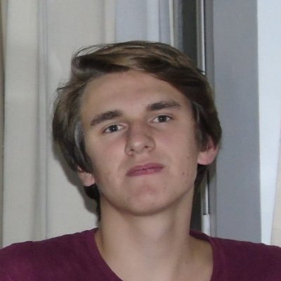

I am a predoctoral researcher in the TECF3IR group of the Department of Energy Engineering at UNED, in Madrid. I work on radiation transport and shielding for fusion facilities. My tools are Monte Carlo transport codes, such as MCNP and OpenMC, and neural networks trained on their results.
My PhD, supervised by Rafael Juárez Mañas and Pablo Martínez Albertos, continues the development of NACARTE. NACARTE estimates the photon dose rate in real time, directly on the CAD model of a facility, to support the design of the ITER Hot Cell Complex.
I studied Energy Engineering and the Master in Nuclear Science and Technology at the Universidad Politécnica de Madrid. Before the PhD, I worked at HI Iberia on neural networks that predict the results of Monte Carlo neutron transport simulations of IFMIF-DONES. I am also studying Physics and the Master in Computational Neutronics at UNED, part time.
Research
NACARTE: dose rates on CAD in real time
Radiation maps of ITER are computed with Monte Carlo codes such as MCNP, and each new configuration takes hours to days of computing. During design the geometry and the sources change often, so this cost limits how many options can be checked. The point-kernel method is much faster. It computes the uncollided photon flux along a straight line from the source to each point, and multiplies it by a build-up factor that accounts for the scattered photons. Tabulated build-up factors assume an infinite homogeneous medium, so they are inaccurate in finite rooms with multilayer walls.
NACARTE (Neural-network Assisted CAd-based Real-Time dose Estimator) is a CAD add-in first developed at UNED by Mario Belotti for Ansys SpaceClaim, and now migrated to Ansys Discovery. It applies the point-kernel method directly on the CAD geometry. Ray tracing on the GPU gives the uncollided flux and a neural network gives the build-up factor, so a dose map is ready in seconds.
The original network only reads the source and the shielding wall, so it cannot see the rest of the room. In my doctoral research work, NACART²E, rays are cast from the centre of every voxel of the tally mesh. For each solid they cross, they record the entry distance, the perpendicular thickness, the material and the surface normal. Four networks that read this description were compared with MCNP and with the original network: a 3D convolutional network and three neural operators (FNO, DeepONet and MIONet). The selected model is a MIONet whose geometry branch is a 3D convolutional network. In the thesis database the column standing in the room never moves, so the database cannot tell a memorised position from a learned rule. The next step is a larger database with an obstacle of random shape, position and material in every room.
Surrogate models for IFMIF-DONES
At HI Iberia (2024–2025), within the DONES-FLUX project, I trained neural networks on Monte Carlo simulations of IFMIF-DONES. They predict the neutron flux, the damage energy, the hydrogen and helium production and the heating from the shape of the deuteron beam footprint. The networks are differentiable, so the beam parameters can be optimised by gradient descent.
Neutron fluence in Watts Bar Unit 1
At the Universidad Politécnica de Madrid (2023–2024) I modelled the core of the TVA Watts Bar Unit 1 reactor with OpenMC. I set up a method to compute the neutron fluence in the extended beltline of the reactor vessel, the region above and below the core where the inlet and outlet nozzles are. This work was also my master's thesis.
Publications
Journal article
- Differentiable Deep Learning Surrogate Models Applied to the Optimization of the IFMIF-DONES Facility G. Gallardo Romero, G. Rodríguez-Llorente, L. Magariños Rodríguez, R. Morant Navascués, N. Khvatkin Petrovsky, R. Lorenzo Ortega, R. Gómez-Espinosa Martín Particles 8 (2025) 21. doi:10.3390/particles8010021
Theses
- NACART²E: Neural Network assisted CAD-based Real Time Dose Estimator with Augmented Geometrical Information via Ray Tracing Doctoral research work (Trabajo de Investigación de Doctorado), UNED, Madrid, September 2026. Tutors: R. Juárez Mañas and J. Alguacil Orejudo.
- Modelling of TVA Watts Bar Unit 1 nuclear power plant with the Monte Carlo code OpenMC Master's thesis, Universidad Politécnica de Madrid, February 2024. Supervisor: E. Castro González.
Conference contributions
- Accelerating and Optimizing Neutronic Simulations with Differentiable Neural Operator-based Surrogate Models Talk, Fusion Neutronics Meeting 2025: ITER and beyond, UNED, Madrid, 7–10 April 2025.
- Deep Learning Surrogate Models for Neutronic Irradiation Optimisation in IFMIF-DONES N. Khvatkin Petrovsky, L. Magariños Rodríguez, G. Rodríguez Llorente, R. Morant Navascués, G. Gallardo Romero, R. Lorenzo Ortega, R. Gómez-Espinosa Martín Poster, FISA 2025 & EURADWASTE '25, Warsaw, 12–16 May 2025.
- Aplicación de modelos subrogados con aprendizaje profundo para simulación neutrónica - proyecto DONES-FLUX N. Khvatkin Petrovsky, L. Magariños Rodríguez, R. Morant Navascués, G. Rodríguez Llorente, R. Gómez-Espinosa Martín Talk, 50th Annual Meeting of the Spanish Nuclear Society (SNE), Córdoba, 9–11 October 2024. Presented in the session on advanced reactors and nuclear fusion, and again in the young researchers' session.
Timeline
- Autumn 2026
EducationStarted the Master in Computational Neutronics at UNED, part time.
- Sep 2026
ThesisFinished my doctoral research work, NACART²E, at UNED.
- Jun 2026
Conference2nd Fusion Neutronics Meeting at KIT, Germany. Co-author of a talk on the group's work for ITER, and participant in the OpenMC workshop.
- Early 2026
EducationStarted the Bachelor's Degree in Physics at UNED, part time.
- Nov 2025
PositionJoined the TECF3IR group at UNED as a predoctoral researcher. Started the PhD on NACARTE and the training in ITER nuclear analysis.
- Jun 2025
CourseIntroduction to Fusion Energy and Plasma Physics, Princeton Plasma Physics Laboratory.
- May 2025
PosterFISA 2025 & EURADWASTE '25, Warsaw. Deep learning surrogate models for IFMIF-DONES.
- Apr 2025
TalkFusion Neutronics Meeting 2025: ITER and beyond, Madrid. Differentiable surrogate models for neutronic simulations.
- Feb 2025
PaperArticle in Particles on differentiable surrogate models for the optimisation of IFMIF-DONES.
- Oct 2024
Talk50th Annual Meeting of the Spanish Nuclear Society, Córdoba. The DONES-FLUX surrogate models, presented in two sessions.
- Apr 2024
PositionAI Engineer at HI Iberia. Surrogate models and multi-objective optimisation for IFMIF-DONES.
- Feb 2024
ThesisMaster's thesis at UPM on Watts Bar Unit 1 with OpenMC.
- Jul 2023
PositionResearch assistant at UPM. Neutron fluence on the reactor vessel of Watts Bar Unit 1.
- 2022
EducationStarted the Master in Nuclear Science and Technology at UPM.
- Apr 2022
PositionSimulation and modelling intern at Tecnatom. Thermal-hydraulic models of nuclear power plants.
- 2017
EducationStarted the Bachelor's Degree in Energy Engineering at UPM.
Contact
Email: nikita@ind.uned.es
LinkedIn: linkedin.com/in/nikita-khvatkin-petrovsky
GitHub: github.com/KhvatkinNikita
TECF3IR group, Department of Energy Engineering
Escuela Técnica Superior de Ingenieros Industriales, UNED
Madrid, Spain